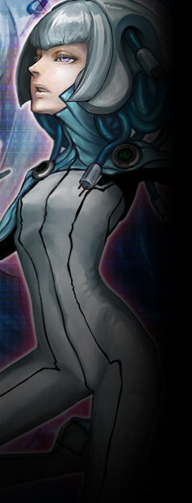

▼技術情報室【 ヨルムンガンド 】
テセウスの後方支援組織。室長はセラフィーマ。
上層のニーベルングに比肩する情報力を有し、裏社会の情報においてはそれさえ凌ぐと言っても過言ではない。
諜報組織として見た際の主力は
ユグドラシルに入港する強制収容者の初回の管理も担っているが、 公式サイト原文
ニーベルングに負けじとも劣らない情報力を持つ。
ユグドラシルに入港してくる強制収容者の初回の管理も担っているが、
情報源として重宝されるが、 |
|
 |
セラフィーマ
|
||||||||||||||||||
|
ジョン・ドゥの側近。情報室ヨルムンガンドの室長も担う女性。
ジョンを「マスター」と呼んで心酔しており、ファミリーの意向に己の判断を差し挟まない。
異能【ユビキタストレース】は電脳空間へ己の意識を介入させるエスパー能力。
「――マスターの御心のままに」 |
|||||||||||||||||||
公式サイト原文
セラフィーマ
ジョン＝ドゥの側近。情報室ヨルムンガンドの室長も担う。
かつては上層の研究所に囚われ、
電脳空間へ意識を自由に行き来させる
言葉は少なく、物静かであるが周りの者を常に気遣う優しい女性。 愛称はセラ。通称【 電子妖精 】。 「私はいつも――御心のままに。」 「マチルダ、あまり乱暴なことは控えてね。」 |
|||||||||||||||||||